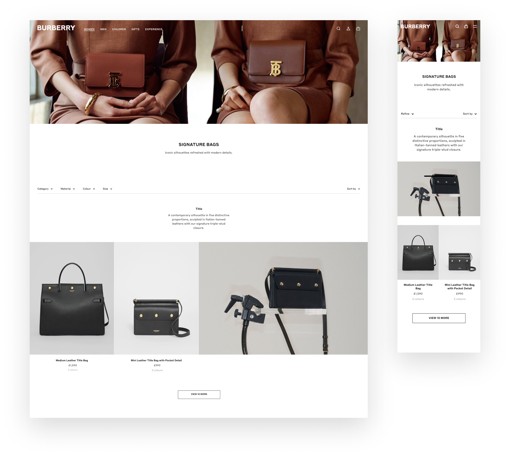

E-commerce Redesign During Rebrand and Backend Migration
Burberry was undergoing its first major rebrand in over a decade while simultaneously migrating its e-commerce backend. The objective was to modernise the shopping experience and align it with the new creative direction without introducing functional risk or extending the migration timeline.
The project required a delicate balance: we needed to implement the new brand identity and reduce customer journey friction while working within the strict limitations of an inflight backend migration that prevented major architectural changes.
We identified high-impact design interventions that required minimal implementation risk. By mapping challenges for each page type alongside merchandising and analytics, we prioritised changes grounded in evidence and technical feasibility rather than purely aesthetic preference.

Analytics indicated that users frequently reached zero-result states after applying multiple filters, leading to high drop-off rates on the Product Listing Pages (PLP).
Solution: We introduced real-time filtering logic that dynamically removed invalid combinations as users made selections. This ensured the PLP always returned a viable product set, effectively eliminating dead-end states and supporting a more fluid browsing experience.
Testing revealed that the favourites icon was rarely used and often became illegible against certain product imagery. Users were frequently adding items to their bags as a workaround for shortlisting, which cluttered the primary conversion path.
Solution: We chose to deprioritise the favourites feature for the launch phase. By removing the icon from product cards, we reduced visual noise and focused the user's attention on the primary call to action, creating a cleaner and more intentional interface.
Data showed that users often bypassed the homepage or rarely scrolled when landing on it, preferring to use the mega-nav to reach specific categories.
Solution: We shifted the strategy to treat the homepage as a navigation surface rather than a storytelling canvas. We increased the prominence of the navigation elements, shortened the page length, and ensured every component served to route users quickly into their desired category.
With functional scope limited by the migration, we focused on the high-finish details of micro-interactions and animation.
Solution: We evaluated every component to determine how motion could guide the user or subtly express the new brand identity. By working closely with engineering to validate these interactions, we ensured that the refined aesthetic did not compromise site performance or load speeds.
While the system was primarily built for the web, it influenced app and marketing outputs. We contributed to the foundational tokens and interaction principles, creating a companion framework to help cross-functional teams align on the new visual direction and interaction language.
The redesign was released gradually over twelve months to minimise risk during the backend migration, with each phase monitored and adjusted based on live performance.
Engagement: Homepage bounce rate reduced by 10% and PLP bounce rate by 5%.
Functional Success: Filtering dead-end cases were entirely eliminated.
Transition: The release successfully bridged a major brand transition, maintaining stability during a critical technical shift.